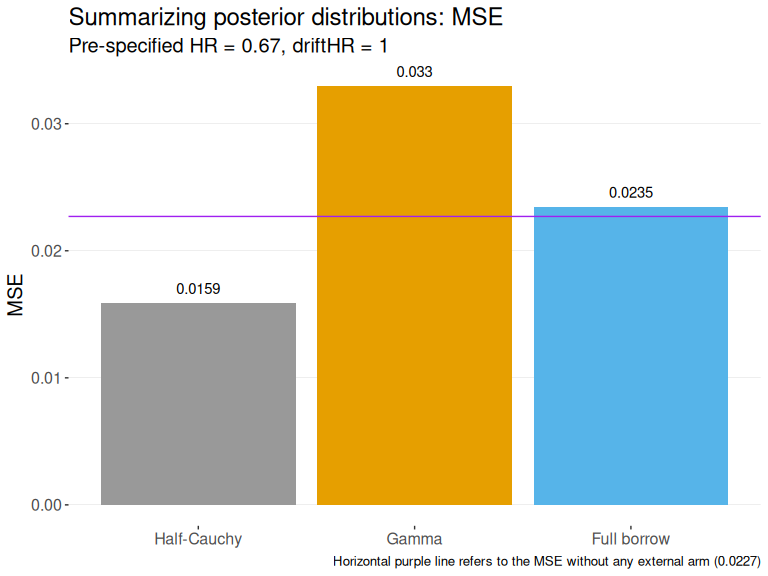

User Guide: Dynamic Borrowing with psborrow
Yichen Lu
2023-03-01
user_guide.RmdThis psborrow package aims to evaluate the effect of
external borrowing using an integrated approach that combines propensity
score and Bayesian dynamic borrowing methods. Users are encouraged to
check the helper page for each function to understand the requirements
for parameter inputs and the format of the outputs.
Here we demonstrate the usage of the package with an example. The goal is to:
- Simulate covariates for external control, internal control, and internal treatment arms
- Generate censored survival times
- Run Markov chain Monte Carlo (MCMC) to generate the posterior distribution for Bayesian hierarchical model
- Summarize posterior distributions for treatment effect estimate
Install the package
library(psborrow)Simulate covariates
We start with making the sample size for internal control, internal treatment, and external control arms to be 200, 180 and 400 respectively.
ss = set_n(ssC = 200, ssE = 180, ssExt = 400)We call function set_cov() to create two binary
covariates \(x_1\), \(x_2\), and one continuous covariate \(x_3\) from the following multivariate
normal distribution with covariance between each pair of the variables
specified by cov in the order of \(Cov(x_1, x_2)\), \(Cov(x_1, x_3)\), and \(Cov(x_2, x_3)\).
\[\begin{aligned} \begin{bmatrix} x_1\\x_2\\x_3\\ \end{bmatrix} &\sim N \left( \begin{bmatrix} 0\\ 0.5\\0.5 \end{bmatrix}, \begin{bmatrix} 1 & 0.5 & 0.7\\ 0.5 & 1.2 & 0.9\\ 0.7 & 0.9 & 1\\ \end{bmatrix} \right) \end{aligned}\]
covset1 <- set_cov(
n_cat = 2,
n_cont = 1,
mu_int = c(0, 0.5, 0.5),
mu_ext = c(0.7, 0.5, 0.9),
var = c(1, 1.2, 1),
cov = c(0.5, 0.7, 0.9),
prob_int = c(0.45, 0.55),
prob_ext = c(0.65, 0.55)
)\(x_1\) and \(x_2\) are further converted to binary
variables \(x_1\) and \(x_2\) using quantiles of the normal
distribution calculated from the probability specified by
prob_int for internal trial and by prob_ext
for external trial:
\[ \begin{aligned} \text{internal: Pr} (X_1 = 1) &= 0.45 \\ \text{Pr}(X_2 = 1) &= 0.55\\ \text{external: Pr} (X_1 = 1) &= 0.65\\ P(X_2 = 1) &= 0.55\\ \end{aligned} \]
The package enables the user to add covariates in batch.
covset2 includes information for two continuous covariates
and three binary covariates. We set mu_int = 0 to have the
mean for all five variables in this cluster to be 0 in the internal
trial. The same rule applies to parameter mu_ext,
var, cov, prob_int and
prob_ext.
covset2 <- set_cov(
n_cat = 2,
n_cont = 3,
mu_int = 0,
mu_ext = 0.2,
var = 0.7,
cov = 0.7,
prob_int = 0.5
)We then combine covset1 and covset2, and
call function simu_cov() to simulate the covariates and add
them to the treatment variables saved in ss.
In this step, we also set the true hazard ratio
HR between the internal treatment and control arm, and the
hazard ratio driftHR between the external control and
internal control arms. User can provide a list of different
HR and driftHR values to test a range of
different hazard ratios between the three arms.
The number of simulations nsim and seed parameters
seed are included in the same statement to produce
reproducible results. sample_cov is a list of 8
matrices.
cov_list <- c(covset1, covset2)
sample_cov <- simu_cov(
ssObj = ss,
covObj = cov_list,
HR = c(0.67, 1),
driftHR = c(1, 1.2),
nsim = 10,
seed = 47
)Example of one simulated dataset (matrix) with covariates and
treatment arm information from output sample_cov:
head(sample_cov[[1]], 5)
#> driftHR HR ext trt cov1 cov2 cov3 cov4 cov5 cov6
#> [1,] 1 0.67 1 0 0 0 1.426442353 1 1 0.06551554
#> [2,] 1 0.67 1 0 1 1 0.413408109 1 1 -0.86978705
#> [3,] 1 0.67 1 0 1 1 -0.667792987 1 1 -0.52705950
#> [4,] 1 0.67 1 0 0 1 -0.008703362 1 1 -0.66796308
#> [5,] 1 0.67 1 0 1 1 -0.941826735 0 0 0.90304807
#> cov7 cov8
#> [1,] 0.06551554 0.06551554
#> [2,] -0.86978706 -0.86978706
#> [3,] -0.52705948 -0.52705948
#> [4,] -0.66796308 -0.66796308
#> [5,] 0.90304809 0.90304809Survival
Time-to-event
The second part involves generating time-to-events from either a
piece-wise exponential distribution or weibull distribution. In the
example below, we assume the survival time follows the piece-wise
exponential distirbution such that baseline hazard rate is constant in
months 1-2, and from month 3 onward. The baseline hazard rate
(lambdaC) for patients with all covariate equaling 0 in the
internal control arm in these time periods are 0.0135 and 0.2,
respectively. The baseline hazard rate for the internal treatment and
external control arm are the product of lambdaC and
HR, driftHR, respectively.
The calculation below details how we draw event time for each patient following an exponential distribution. For each patient, we calculate a specific \(\lambda\) value based on the trial and treatment indicator, along with the covariate values for this patient.
\[ \begin{aligned} f(t) &= v\lambda t^{v-1} e^{-\lambda t^v} \\ F(t) &= 1 - e^{-\lambda t^v} \\ \lambda(t) &= \lambda v t ^{v-1} \\ \\ v &\text{: shape parameter (user-specified)}\\ \lambda &\text{: rate parameter}\\ \lambda_c &\text{: baseline hazard rate at time 0 for internal control patient with covariates } X = 0 \\ \\ \text{Alternative parameterizations}\\ f(t) &= \frac{v}{k} \left( \frac{t}{k} \right) ^{v-1} e^{-\frac{t}{k}^v} \\ &= v \left( \frac{1}{k} \right) ^{v} t^{v-1} e^{- \left(\frac{t}{k} \right) ^v} \\ \lambda &= \left( \frac{1}{k} \right) ^ v\\ \lambda(t) &= \lambda v t ^{v-1} \\ log(k) &= - \frac{1}{v} log(\lambda) \\ k &\text{: scale parameter (input for rweibull in R, one k for each patient)}\\ \\ \text{Internal control}\\ \lambda &= \lambda_c \times e^{X \beta}\\ \lambda(t) &= \lambda_c \times e^{X \beta} \times v t ^{v-1} \\ log(k) &= - \frac{1}{v} \Bigl[ log (\lambda_c) + X \beta \Bigr] \\ \\ \text{Internal treatment}\\ \lambda &= \lambda_c \times \text{HR} \times e^{X \beta} \\ \lambda(t) & = \lambda_c \times \text{HR} \times e^{X \beta} \times v t ^{v-1}\\ log(k) &= - \frac{1}{v} \Bigl[ log(\lambda_c) + log(\text{HR}) + e^{X \beta} \Bigr] \\ \\ \text{External control} \\ \lambda &= \lambda_c \times \text{driftHR} \times e^{X \beta} \\ \lambda(t) &= \lambda_c \times \text{driftHR} \times e^{X \beta} \times v t ^{v-1} \\ log(k) &= - \frac{1}{v} \Bigl[ log(\lambda_c) + log(\text{driftHR}) + e^{X \beta} \Bigr] \\ \end{aligned} \]
Since the covariate data we generated above in
sample_cov contains 8 covariates, we also want to make sure
the length of beta is 8.
evt <- set_event(
event = "pwexp",
lambdaC = c(0.0135, 0.02),
t_itv = 2,
beta = c(
rep(0.2, 3),
0.3,
rep(0.5, 2),
rep(2, 2)
)
)Additionally, users can choose to expand the covariates when calculating the hazard rate. In the example below, the hazard rate for patient i from the internal control will be calculated as below. Same as internal treatment and external control arms.
\[ \begin{aligned} \lambda_i = \lambda_C \times e^{0.2 \times x_3 + 0.3 \times (x_1 \times x_3) + 0.5 \times (x_2 + x_3) + 2 \times x_1^3} \end{aligned} \]
set_event(
event = "pwexp",
lambdaC = c(0.0135, 0.02),
t_itv = 2,
beta = c(0.2, 0.3, 0.5, 2),
change = list(
c("cov1", "*", "cov3"),
c("cov2", "+", "cov3"),
c("cov1", "^", "3")
),
keep = "cov3"
)Time-to-events can also follow a weibull distribution. Under this
setting, we are expected to enter the shape of the weibull distribution
which is 0.9 in this case. We let beta = 0.5 to be the
coefficients for all covariates. Users can use ?set_event
to see more options.
set_event(
event = "weibull",
shape = 0.9,
lambdaC = 0.0135,
beta = 0.5
)For Weibull distribution, the goal is to find the hazard rate \(\lambda(t)\) for patient with covariates \(X\).
\[ \begin{aligned} f(t) &= \lambda e^{-\lambda t} \\ F(t) &= 1 - e^{-\lambda t} \\ \lambda(t) &= \lambda \\ \\ \lambda_c &\text{: baseline constant hazard rate for internal control patient with covariates } X = 0 \\ \text{HR} &\text{: hazard ratio between internal treatment vs control arm (proportional hazards)} \\ \text{driftHR} &\text{: hazard ratio between external vs internal control arm (proportional hazards)} \\ \text{I}(\text{trt}) &\text{: treatment arm indicator} \\ \text{Internal control}\\ \lambda &= \lambda_c \times e^{log(\text{HR}) \times \text{I}(\text{trt}) + X \beta} \\ & = \lambda_c \times e^0 \times e^{X_{i} \beta} \\ & = \lambda_c \times e^{X \beta} \\ \text{Internal treatment}\\ \lambda &= \lambda_c \times e^{log(\text{HR}) \times \text{I}(\text{trt}) + X \beta} \\ & = \lambda_c \times e^{log(\text{HR}) + X \beta} \\ & = \lambda_c \times \text{HR} \times e^{X \beta} \\ \text{External control} \\ \lambda &= \lambda_c \times \text{driftHR} \times e^{X \beta} \\ \text{Reparameterization for rweibull} \\ f(t) &= \lambda e^{-\lambda t} \\ F(t) &= 1 - e^{-\lambda t} \\ \lambda(t) &= \lambda \end{aligned} \]
Enrollment pattern, drop-out, analysis start time
Next, we specify the parameters for enrollment time, drop-out pattern and analysis start time. Both enrollment time and time-to-exit follow piece-wise exponential distribution.
The parameters are set separately for internal and external trials.
For internal trial, we recruit 2 patients per month in the first 5
months, 3 patients from month 6 to month 1, and 16 patients per month
after month 10. We assume dropouts at a rate of etaC = 1
per month for the control arm in the first 2 month and the rate
increases to 1.2 afterwards.
The analysis is set to start at 45 months after the study begins (enrollment of the first patient) and a warning message will show if any patient enrolled after this cut-off date and they will be excluded from any future analysis.
c_int <- set_clin(
gamma = c(2, 3, 16),
e_itv = c(5, 10),
CCOD = "fixed-first",
CCOD_t = 45,
etaC = c(0.02, 0.03),
etaE = c(0.2, 0.3),
d_itv = 2
)For the external trial, both the recruitment rate gamma
and the drop-out rate etaC are assumed to be constant. We
can skip etaE since the external trial contains data on
control arm only. Note that in this case, we do not need to specify
e_itv or d_itv. The cut-off date
CCOD = "event" means the analysis starts once 150 events
have been observed.
c_ext = set_clin(
gamma = 10,
CCOD = "event",
CCOD_t = 150,
etaC = 0.05
)With all the information provided above, we simulate enrollment
pattern, time-to-events and time-to-dropout using function
simu_time(). User can also provide a seed value here
too.
sample_time <- simu_time(
dt = sample_cov,
eventObj = evt,
clinInt = c_int,
clinExt = c_ext,
seed = 47
)Example of one simulated dataset with time-to-events information
from output sample_time:
head(sample_time[[1]], 5)
#> driftHR HR ext trt cov1 cov2 cov3 cov4 cov5 cov6 cov7
#> [1,] 1 0.67 0 1 0 0 1.69867515 0 0 1.4069318 1.4069318
#> [2,] 1 0.67 0 1 1 1 -0.42546841 1 1 -0.3578853 -0.3578853
#> [3,] 1 0.67 0 1 1 1 -0.04927021 0 0 0.1370222 0.1370222
#> [4,] 1 0.67 0 1 1 1 -0.42705058 0 0 0.3709728 0.3709728
#> [5,] 1 0.67 0 1 0 1 -0.10903808 0 0 0.2500303 0.2500303
#> cov8 time cnsr
#> [1,] 1.4069318 0.1019925 0
#> [2,] -0.3578853 6.4700163 1
#> [3,] 0.1370222 3.5066896 1
#> [4,] 0.3709728 1.5454039 1
#> [5,] 0.2500303 6.8677445 0Bayesian analysis
In the last part, we want to generate a sequence of samples from the
posterior distribution of the parameters of interest using the JAGS
model. Here we call set_prior() to use all covariates as
predictors in the weibull distribution and use a half-cauchy
distribution for the precision parameter in hierarchical dynamic
borrowing.
Users are expected to enter the initial values for the following parameters in the JAGS model:
-
r0: shape of the weibull distribution for time-to-events -
alpha: log of baseline hazard rate for external and internal control arms -
d: precision parameter
For each dataset simulated, we can run Bayesian analysis using different predictors or priors simultaneously. For this batch of priors for testing, we choose to account for all covariates in the model.
pr1 <- set_prior(
pred = "all",
prior = "cauchy",
r0 = 1,
alpha = c(0, 0),
sigma = 0.03
)
pr2 <- set_prior(
pred = "all",
prior = "gamma",
r0 = 1,
alpha = c(0, 0)
)
pr3 <- set_prior(
pred = "all",
prior = "no_ext",
r0 = 1,
alpha = 0
)
pr4 <- set_prior(
pred = "all",
prior = "full_ext",
r0 = 1,
alpha = 0
)In the next example, we use a propensity score calculated based on
two covariates cov1 and cov2 to be the
predictor in the weibull model. The propensity score are generated using
a logistic regression model.
Below we present some other examples of set_prior().
Users can use ?set_prior to see more options.
# Use no covariate. External arm will not be included in the Bayesian model
set_prior(
pred = "none",
prior = "no_ext",
r0 = 1,
alpha = 0
)
# Use propensity score calculated using all covariates as predictor.
# Hazard ratio = 1 for external and internal control arms
set_prior(
pred = "ps",
prior = "full_ext",
r0 = 1,
alpha = 0
)
# Use a subset of covaraites as predictors
set_prior(
pred = c("cov2", "cov5"),
prior = "no_ext",
r0 = 1,
alpha = 0
)Lastly, we combine all four priors, and run MCMC to generate samples
from posterior distributions. The number of parallel chains for the
model, number of iterations for adaptation, number of iterations
discarded as burn-in and number of iterations to monitor are 2, 100,
100, 200 respectively. User can also provide a seed value. User can
choose to leverage parallel processing through calling
run_mcmc_p() instead of run_mcmc().
If folder path path is provided, run_mcmc()
and run_mcmc_p() will output and save the MCMC result and
summary statistics.
Posterior summary statistics
To generate summary statistics of one or multiple simulation
scenarios, we can call get_summary().
summ <- get_summary(res)Example of the summary statistics from output
summ:
head(summ, 5)To visualize the results, users can call plot_hr,
plot_type1error and plot_power to see the
Bayesian posterior mean hazard ratios between the treatment and control
arm, as well as power, type I error implications.
plot_type1error(
summ,
driftHR = 1.2,
pred = "all"
)
plot_power(
summ,
HR = 0.67,
driftHR = 1,
pred = "all"
)
plot_hr(
summ,
HR = 0.67,
driftHR = 1.2,
pred = "all"
)
plot_bias(
summ,
HR = 1,
driftHR = 1.2,
pred = "all"
)
plot_mse(
summ,
HR = 0.67,
driftHR = 1,
pred = "all"
)
Package Options
By default psborrow is quite chatty informing the user
explicitly about what assumptions it is making. If you want to suppress
these messages simply specify:
options("psborrow.quiet" = TRUE)